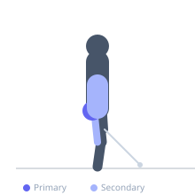
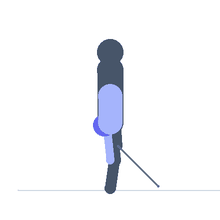

Exercise guide / Cable Standing Hip Extension / Donkey Kickback
Cable Standing Hip Extension / Donkey Kickback
The cable standing hip extension uses a low cable pulley with an ankle cuff to provide resistance against hip extension. The lifter stands facing the cable stack and extends one leg backward, squeezing the glute at the peak of the movement. Unlike machine glute kickbacks, the cable maintains constant resistance throughout the full range of motion. It is a popular isolation exercise for targeting the gluteus maximus.
Primary muscles
gluteus maximus
Secondary muscles
biceps femoris long head
erector spinae
Stabilizers
gluteus medius
transverse abdominis
Equipment
Cable Machine (Low Pulley)


Starting position
- Attach an ankle cuff to the low cable pulley. Stand facing the cable machine, holding the frame for balance. Ankle cuff on the working leg.
Setup
- Set a light to moderate weight. Attach the cuff securely. Stand close to the machine with the working ankle directly over the pulley.
Steps
- Step 1: Keep the torso upright or with a slight forward lean, bracing the core.
- Step 2: Keeping the knee nearly straight, extend the working leg backward.
- Step 3: Squeeze the glute hard at the peak of the extension.
- Step 4: Return the leg forward in a controlled manner, maintaining cable tension.
Coaching cues
- Squeeze the glute at the top
- Stand tall — don't arch
- No swinging
Breathing
- Exhale on the extension, inhale on the return.
Range of motion
- Extend as far as the glute can control without lower back compensation.
Tempo
- 1-1-2-0 (hold at top, slow return)
Common mistakes
- Hyperextending the lower back instead of using glute force
- Swinging the leg with momentum rather than deliberate contraction
- Leaning forward excessively
Safety
- Keep the lower back neutral — avoid arching to extend further
- Use a moderate weight that allows full glute control
Training
- hypertrophy: 12–20 reps
- endurance: 20–30 reps
- hypertrophy: 3–4 sets
- endurance: 2–3 sets
- Rest: {'hypertrophy': 60, 'endurance': 30}